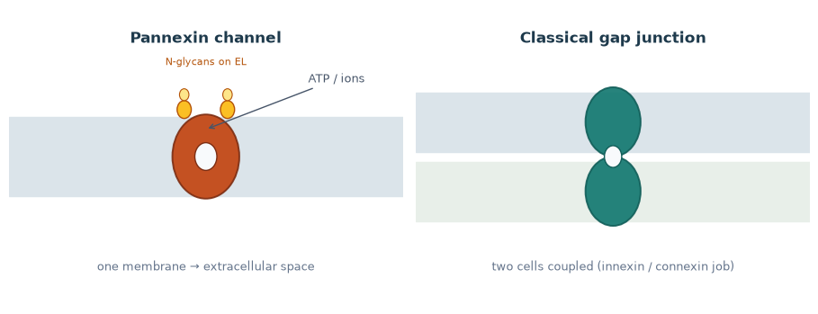
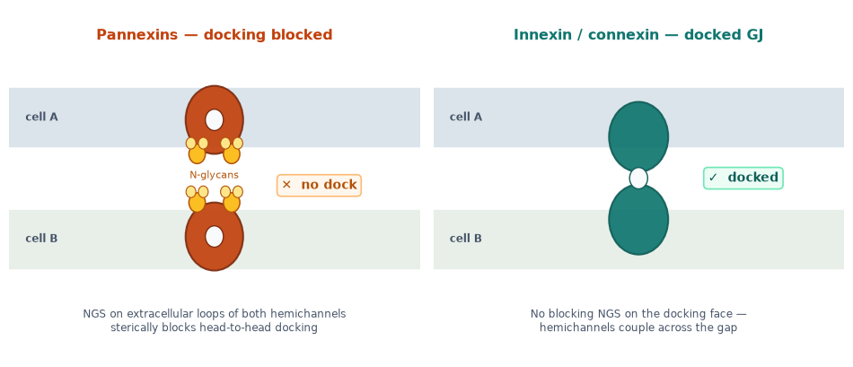
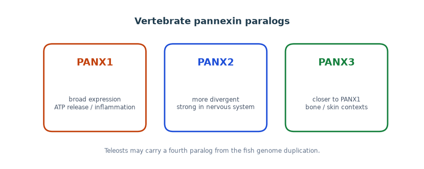
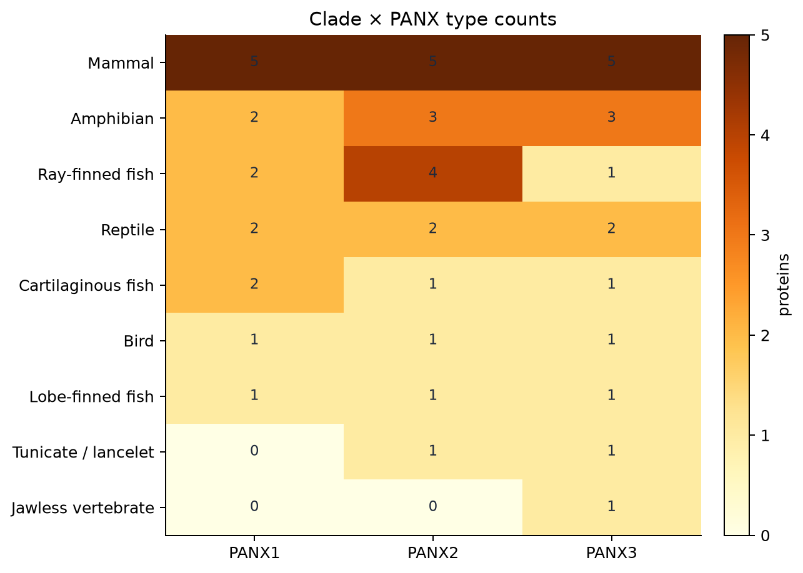

What pannexins are
The gap-junction path is mostly a binary invertebrate–vertebrate split (innexin × connexin). Pannexins are the third family: vertebrates kept ancestral innexin homologs, still with Cys motif 2 + 2 = 4 per monomer (not the connexin 3 + 3 = 6 pattern). Literature calls them heptameric single-membrane channels. The useful sequence marker here is a conserved extracellular N-X-S/T (Asn-X-Ser/Thr) site linked to non-docking behaviour — they do not form intercellular gap junctions.

The N-X-S/T sequence marker
Pannexins carry a conserved Asn-X-Ser/Thr (N-X-S/T) motif on their extracellular loops — the classical N-linked glycosylation (NGS) site pattern. That motif is a simple sequence filter separating non-docking pannexons from dockable innexin/connexin gap junctions. We use it as an annotation character, not as a sugar-chemistry argument.

The early chordate bottleneck
Why keep a glycosylated innexin at all? Welzel & Schuster 2022 (eLife) put the answer at the chordate origin: innexin diversity collapsed. Lancelets (Branchiostoma) have no connexins and only one conserved innexin with an extracellular NGS site. That remnant may not form functional gap junctions. The usual reading is that this bottleneck favoured later connexin diversification, while the glycosylated innexin lineage continued as today’s pannexins (PANX1–3 after vertebrate genome duplications).

Three named paralogs
Jawed vertebrates typically keep PANX1, PANX2, and PANX3 (from early vertebrate genome duplications of that single glycosylated chordate innexin). PANX1 and PANX3 are closer; PANX2 is the outlier. Teleosts can carry an extra copy.

Across clades: who keeps which paralogs
The curated UniProt panel is vertebrate-heavy on purpose — mammals, birds, reptiles, amphibians, ray- and lobe-finned fish, a cartilaginous fish — with early-chordate context from lamprey, lancelet, and tunicate. Across that panel, named PANX1 / PANX2 / PANX3 labels fill most jawed vertebrate rows as a triplet; early chordates stay sparse. PANX2 proteins run longer (median ~674 aa) than PANX1 / PANX3 (~426 / ~408 aa).


Clade × type comparison
Length distributions, per-species copy numbers, and the annotation-status join — same shape as the connexin clade page.
Homology is the point
Unlike connexins, pannexins are homologous to innexins — the retained chordate branch after the diversity collapse. Connexins fill the vertebrate gap-junction niche as a separate sequence family. Full picture: innexin (invertebrate GJ), connexin (vertebrate GJ), pannexin (vertebrate channel, NGS-marked remnant).

Pannexin × innexin
Same MMseqs thresholds as innexin×connexin — here most pannexins hit at least one innexin.
What the panel shows
Taken together: a curated vertebrate/chordate UniProt set, clade × PANX1–3 occupancy, within-family similarity, a pannexin×innexin homology contrast, and a simple PANX tree with Ciona innexin outgroups. Weak LOC labels (lancelet, lamprey) still need the phylogeny page as a second look.
Pannexin insights
Curated figures: homology, panx×inx, clades, rendered tree, exon notes.
Pannexin similarity
MMseqs and composition space inside the curated panel.
PANX1 / PANX2 / PANX3 phylogeny
MAFFT + IQ-TREE on the panel; Ciona innexins as outgroups — no connexins.
UniProt / NCBI status by clade
Same layered classifier used for innexins and connexins, for this species list.